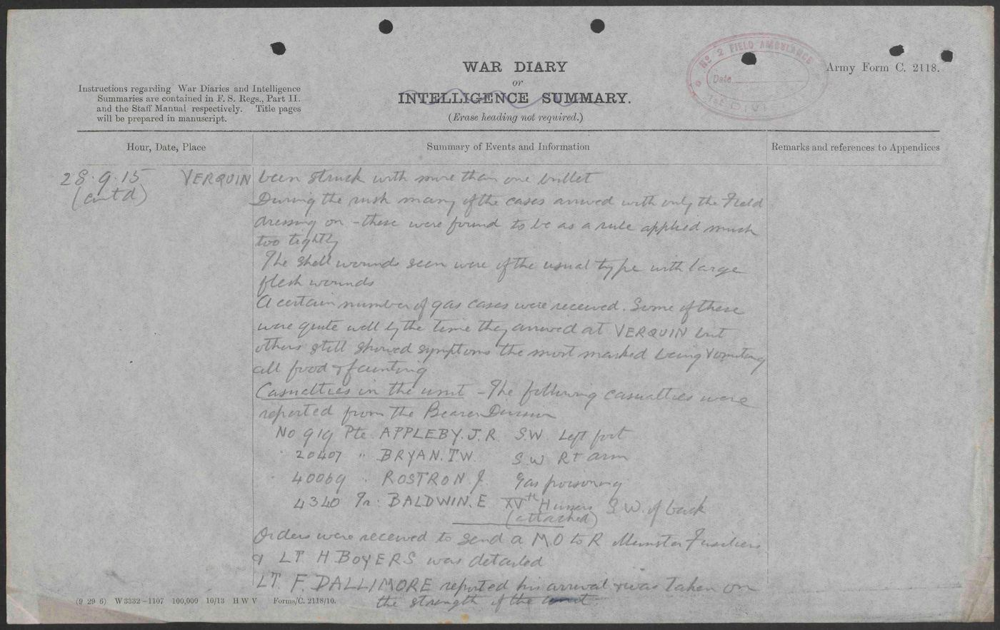
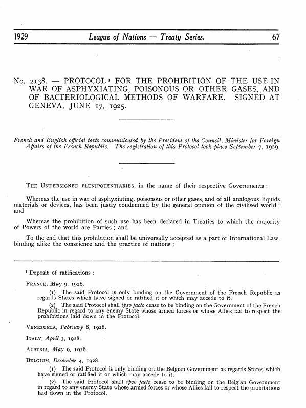

SHORT-TERM IMPACT
Casualty Comparison
Battle of Galicia(The new automatic weapons have not yet played a large-scale role.)
Casualties and losses:
Russian Empire:200,000–300,000(40,000 captured)
Austria-Hungary:324,000–420,000(100,000 dead;220,000 wounded;100,000–130,000 captured)
Battle of the Somme
Casualties and losses:
British Army:420,000(120,000 dead;300,000 wounded)
French Army:200,000(50,000 dead;150,000 wounded)
German Army:237,159-429,209(164,000 dead)
Tactical Revolution
Tanks
"The Battle of Cambrai was the first large-scale use of massed tanks in battle. The battle is often remembered for the initial British success, which saw tanks and infantry working together to break through German trenches. Yet in the tactical methods used by both sides it was a precursor to the fighting of 1918 and also pointed the way towards more sophisticated combined arms tactics and armoured warfare."
Trench warfare and machine guns
"Trench warfare occurred when a revolution in firepower was not matched by similar advances in mobility, resulting in a grueling form of warfare in which the defender held the advantage. The development of the machine gun and the rapid-firing artillery piece meant that any attacking infantry force could be quickly destroyed if caught in the open. This forced armies to dig trenches, creating static lines that could stretch for hundreds of miles."
Shell Shock & Psychological Trauma
Medical symptoms after combat included tinnitus, amnesia, headaches, dizziness, tremors, and hypersensitivity to noise. They might also manifest in a sense of helplessness appearing variously as panic and being scared, flight, or an inability to reason, sleep, walk or talk. [Nowadays understood to be a type of posttraumatic stress disorder].

Medical Progress
The devastation caused by new weaponry in WWI led to numerous medical innovations still used today. Tanks, chlorine gas, machine guns and living in trenches infested by disease all contributed to the need for medical advances to treat infections and save lives. Millions of people died in World War I and millions more were injured. In fact, over 40,000 amputations had to be performed, many of them caused by infections contracted in the trenches. Anaesthesia, antiseptic, blood transfusions, facial reconstructive surgery and portable x-ray machines were all born out of the necessity to treat the millions injured by devastating and violent weaponry in WWI.
LONG-TERM IMPACT
Ethical & Legal Changes
The use of poison gas during World War I triggered widespread international condemnation, leading to the 1925 Geneva Protocol, which prohibited the use of chemical and biological weapons in warfare.

PTSD Recognition
"The advent of heavy explosives in World War I led to the attribution of symptoms to 'shell shock,' giving a more physiological description of the effects from explosions. Even with a more physical explanation of traumatic stress (i.e., shell shock), a prevailing attitude remained that the traumatic stress response was due to a character flaw. However, the establishment of 'trauma' as a distinct diagnostic category has had a profound influence on the mental health field. The publication of the American Psychiatric Association's Diagnostic and Statistical Manual of Mental Disorders, Third Edition (DSM-III), in 1980 marked the introduction of PTSD as a diagnosis, inspired by symptoms presented by veterans of the Vietnam War. Since that time, the understanding of PTSD has evolved significantly, with research identifying specific symptom clusters, neurobiological correlates, and effective treatments. This evolution can be traced directly back to the clinical observations made during World War I, where physicians were forced to confront and document the psychological aftermath of combat on an unprecedented scale. The recognition of shell shock thus laid the groundwork for modern trauma-informed care systems, which now acknowledge that exposure to traumatic events can fundamentally alter an individual's stress response and overall mental health."